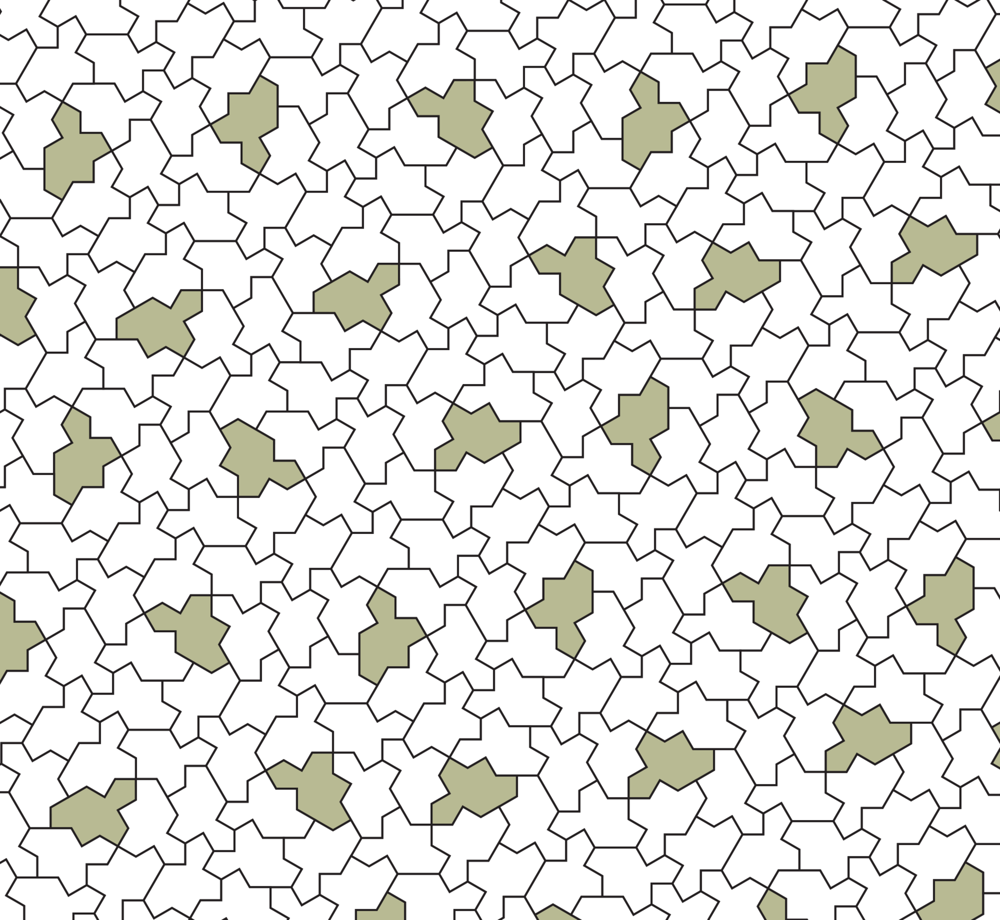

Spectre tile
A strictly chiral aperiodic monotile, also known as Tile(1,1), discovered in 2023.
Overview
The Spectre is a 14-sided equilateral polygon — Tile(1,1) in the Hat's shape continuum — that tiles the plane aperiodically using only translations and rotations. No reflected tiles are needed, and in the strict curved-edge form, none are even possible. It was introduced in A chiral aperiodic monotile as the solution to the "vampire einstein" problem: an aperiodic monotile that casts no mirror image.[2]

The straight-edged Tile(1,1) is subtle: allowed reflections give it a simple periodic tiling, so it is only aperiodic when reflections are forbidden by rule (weakly chiral). Modifying its edges with matching curves — any of the variant silhouettes above — removes that escape hatch and produces the strictly chiral Spectre family.[2]
Geometry and structure
Spectre tilings hide a surprising amount of internal order. Every Spectre tiling decomposes into recognizable hexagonal clusters,[11] and the whole family can be derived from an underlying rhombic tiling shared with the Hat and Turtle.[8] The substitution system that generates Spectre patches admits a homochiral (single-handed) inflation rule,[10] and tile counts per generation follow Fibonacci and Lucas number patterns.[12] Group-theoretic analysis places these tilings in a broader algebraic framework.[9] Long-range order is now understood through CASPr model sets with five Rauzy-fractal windows and pure-point diffraction,[32] and crystallographic analysis confirms non-periodic diffraction with chiral sixfold point symmetry.[34][35] Algorithmic quasilattice constructions and explicit tiling generators complement the substitution picture.[29][30]

Conversions between Tile(1,1) tilings and other aperiodic families are constructive: non-periodic Tile(1,1) tilings can be transformed into tilings by other chiral monotile shapes.[16] Sugimoto’s two-part program converts Tile(1,1) patches into three-pentagon tilings,[16][57] Independent proof techniques — including Akiyama and Araki's alternative argument — confirmed aperiodicity through different routes.[4]
Substitution structure
Like other modern aperiodic tiles, Spectre patches are generated by substitution: a finite set of metatiles refines into smaller copies until a target region is filled. See Substitution tiling for the full picture, including an animated walk up the hierarchy. Public tooling — Kaplan's Spectre explorer and community ports — implements these rules for interactive exploration.[2]
{kind=link}
The Aperiodic Monotile Generator API packages this mathematics for production workflows: clipped patches, stable tile IDs and transforms, and exporters (SVG, STL, GLB, CSV, JSON) — the exact pipeline used to produce the renders across this wiki.
Relationship to the Hat
The Hat is Tile(1,√3) and the Turtle is Tile(√3,1); the Spectre's Tile(1,1) sits at the equilateral point of the same continuum.[2] Every Spectre tiling is closely related to a tiling with sparse hats in a dense field of turtles, and vice versa — the three descriptions morph continuously into each other. Kaplan's historical survey traces the whole path from Penrose tiles to these modern monotiles.[3] Wang-tile machinery provides yet another route to both shapes.[7]
See also
Aperiodic monotile, Hat tile, Substitution tiling
Categories: Mathematics · Concepts